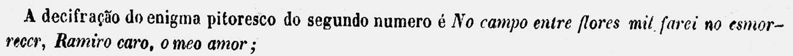

Illustração Brazileira · Rio de Janeiro · 1854
Enigma Pitoresco
A picture enigma
Why am I playing?
How an enigma pitoresco works
The hidden sentence
Pause here
The answer
No campo entre flores mil farei não esmorecer, Ramiro caro, o meo amor.
As the magazine printed it
